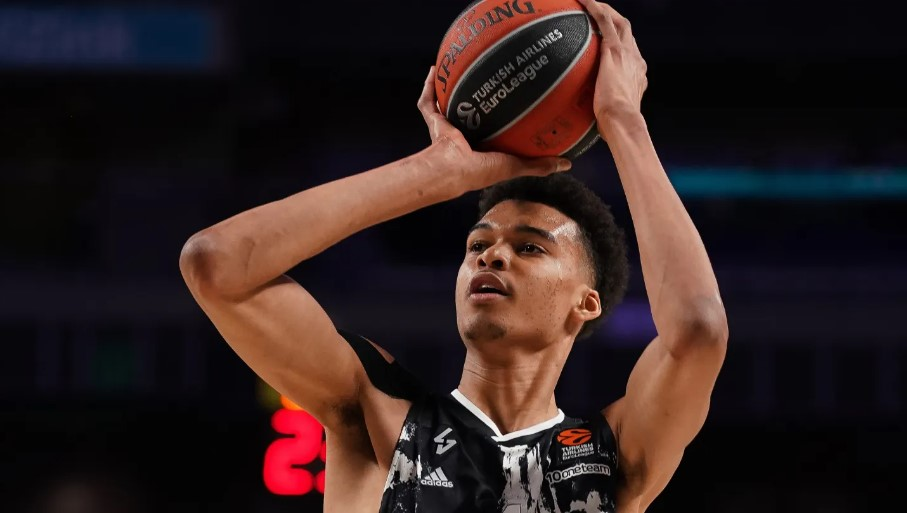

Learn about the journey of one of basketball's brightest stars

Victor Wembanyama was born on 4 January 2004 in Le Chesnay, France. He grew up in a sporting family where athletic ability played an important role in everyday life. His father competed in track and field events while his mother played basketball professionally. This environment helped Victor develop his passion for sport from a very young age.
Although he experimented with several sports including football and judo, basketball quickly became his main focus. His exceptional height and natural athleticism allowed him to stand out from other young players.
Victor began playing organised basketball in France and rapidly developed a reputation as one of the country's most promising young talents. His combination of size, mobility and technical skill was rarely seen in players of his age.
He joined the youth system at Nanterre 92 where coaches recognised his unique potential. As he progressed through the academy system, scouts from around the world began following his development closely.
His performances at youth tournaments attracted international attention and established him as one of the best prospects in world basketball.
Before entering the NBA, Victor played professionally in France for several clubs including Nanterre 92, ASVEL and Metropolitans 92.
While playing in the French leagues he consistently demonstrated elite shot-blocking ability, impressive scoring and excellent basketball intelligence. His performances against experienced professional players further increased excitement about his future.
By the age of 19, many basketball analysts considered him one of the most highly anticipated prospects in NBA history.
In the 2023 NBA Draft, Victor Wembanyama was selected as the first overall pick by the San Antonio Spurs. This marked the beginning of a new chapter in his career.
His rookie season exceeded expectations as he demonstrated the ability to score, rebound, defend and create opportunities for teammates. His impact on games quickly made him one of the most exciting players in the league.
Victor's performances earned him NBA Rookie of the Year honours and established him as a future superstar.
Victor Wembanyama is known for his unique style of play. Unlike many players of similar height, he possesses excellent ball-handling skills, three-point shooting ability and mobility.
Defensively, he is one of the most dominant shot blockers in basketball. His length and timing allow him to protect the rim while also defending players on the perimeter.
Many experts believe his combination of offensive and defensive skills could redefine the future of basketball.